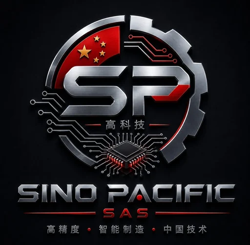

KA
KASRYDestacado
Líneas completas de vigas H y estructura metálica: armado, soldadura y corte CNC.
Representamos en Latinoamérica a fabricantes chinos de maquinaria industrial: corte láser, estructura de acero, doblado, granallado, montacargas, robótica y madera. Tecnología de alta precisión con responsabilidad integral sobre importación, instalación, puesta en marcha, soporte y repuestos.

Somos el puente entre los fabricantes chinos de maquinaria industrial y su planta en Centro y Suramérica. Cada marca abre su propia ficha con su reseña y sus equipos — representación seria, con respaldo local de principio a fin.
Líneas completas de vigas H y estructura metálica: armado, soldadura y corte CNC.
CNC para estructura y torres de acero, más líneas de procesamiento de bobina.
Líder en corte láser de tubo: +3.000 equipos en +80 países. CE y FDA.
Corte láser de lámina y tubo, soldadura, marcado y limpieza. ISO y CE.
Chapa metálica de principio a fin: láser de fibra, plegado CNC y cizallado.
Soldadura, limpieza y corte láser portátil. Presencia en +30 países.
Fabricante chino (Jiangsu, marca desde 1990) especializado en doblado y procesamiento de tubo. CE e ISO.
Roladoras (curvadoras) de placa y perfil para recipientes, calderas, estructura y astilleros.
Robótica industrial: cobots, soldadura, paletizado y control de movimiento.
Granallado y preparación de superficie con 30 años de experiencia.
Manejo de materiales y maquinaria de construcción, con fuerte línea todoterreno y telescópica. +180 países.
Especialistas en equipo portuario y de gran tonelaje, además de montacargas y construcción. +100 países.
Maquinaria para madera con herencia fabril desde 1960.
Haz clic en “Ver equipos” de cada marca para ver sus máquinas, o en “Sitio oficial” para su web completa.
Cubrimos la cadena completa de transformación de bobina y lámina. Cada línea se configura según material, espesor, ancho y cadencia objetivo.
Líneas de slitting con cabezal de cuchillas en árbol, separadores de fleje y bobinador de ejes expansibles. Control de rebaba y ancho por husillo de precisión.
Líneas cut-to-length con niveladora multirrodillo, cizalla hidráulica o voladora y apilador automático. Longitud programable por encoder.
Decoilers y recoilers con expansión hidráulica de mandril, freno por disco/polvo magnético y control de tensión en lazo cerrado.
Levelers con rodillos respaldados y casetes intercambiables que eliminan tensiones residuales y curvatura, con planitud certificada en I-units.
Líneas servo NC 3-en-1 (desenrollado + enderezado + alimentación) sincronizadas con la prensa por leva electrónica, con paso y velocidad programables.
Líneas de roll forming para teja, panel sándwich y secciones a medida, con estaciones de cardán, corte hidráulico en vuelo y receta por perfil en PLC.
Atención directa con nuestro equipo de ingeniería. Sin formularios eternos.
Importar una línea es un acto puntual; sostener su disponibilidad productiva es un compromiso permanente. Por eso el área técnica es el núcleo de Sino Pacific.
Agendar visita técnica →Montaje, conexionado, parametrización de servoaccionamientos y arranque con pruebas FAT/SAT.
Planes por horas de operación, diagnóstico de PLC y respuesta correctiva priorizada.
Cuchillas, rodamientos, componentes hidráulicos y tarjetas de control con tiempos controlados.
Operación segura, ajuste de receta y mantenimiento de primer nivel para maximizar OEE.
Gestionamos todo el proceso, de principio a fin. No tienes que preocuparte por la logística, la aduana ni el montaje: te entregamos tu equipo instalado, funcionando y produciendo.
Seleccionamos el equipo correcto para tu proceso y tu planta.
Supervisamos la producción y las pruebas de aceptación en origen.
Coordinamos fabricante, naviera y transporte internacional.
Gestionamos trámites y desaduanaje sin complicaciones para ti.
Llevamos el equipo hasta el sitio exacto de instalación.
Montaje, comisionamiento y pruebas hasta dejar la máquina operando.
Formamos a tu equipo y respaldamos con repuestos y mantenimiento.
No te entregamos una caja. Te entregamos tu máquina instalada, funcionando y produciendo — con tu inversión protegida en cada paso.
Sino Pacific SAS opera con un enfoque deliberadamente estrecho: representar en exclusiva a fabricantes chinos de equipos para el procesamiento de acero.
Esa especialización nos permite dominar la arquitectura de cada línea, anticipar fallas y sostener un servicio técnico que la mayoría de importadores no puede ofrecer.
Nuestro compromiso: que adquiera tecnología china de alta precisión con la misma tranquilidad operativa que tendría con un proveedor local.
Escríbanos por WhatsApp para respuesta inmediata, o déjenos sus datos y un ingeniero le contactará.